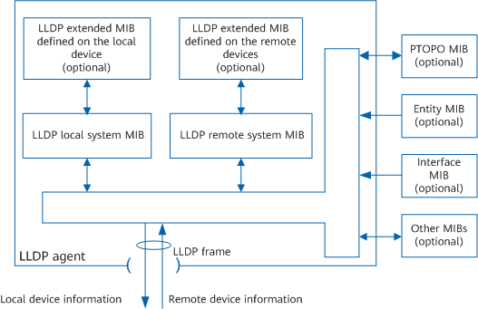
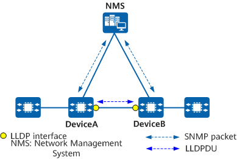

LLDP Fundamentals
LLDP collects and sends local device information to remote devices, and the local device saves information received from remote devices to MIBs.
LLDP requires that each device interface be associated with four MIBs. An LLDP local system MIB that stores status information of a local device and an LLDP remote system MIB that stores status information of neighboring devices are critical. Status information includes the device ID, interface ID, system name, system description, interface description, device capability, and network management address. Figure 1 shows the LLDP fundamentals.
Figure 1 LLDP fundamentals
LLDP is implemented as follows:
- The LLDP module uses an LLDP agent to interact with various MIBs, including the physical topology, entity, and interface MIBs, to update the LLDP local system MIB and LLDP extended MIB defined on the local device.
- The LLDP agent encapsulates local device information in LLDP frames and sends these frames to remote devices.
- After receiving LLDP frames from remote devices, the LLDP agent updates the LLDP remote system MIB and LLDP extended MIB defined on the remote devices.
By exchanging LLDP frames with remote devices, the local device can obtain information about the remote devices, including remote interfaces connected to the local device and the MAC addresses of remote devices.
An LLDP agent performs the following tasks:
Maintains the LLDP local system MIB.
Sends LLDP frames to notify neighboring devices of local device status.
Identifies and parses LLDP frames received from neighboring devices, and maintains information in the LLDP remote system MIB.
Sends an LLDP trap to the NMS when information in the LLDP local system MIB or LLDP remote system MIB changes.
LLDP Topology Discovery
Figure 2 shows the implementation of LLDP topology discovery after LLDP is configured on DeviceA and DeviceB.
Figure 2 LLDP topology discovery
- DeviceA encapsulates its status information into an LLDP frame and sends the frame to the neighbor DeviceB.
- DeviceB parses the received LLDP frame and saves information about DeviceA to its LLDP remote system MIB, allowing the NMS to collect topology information.
- DeviceB encapsulates its status information into an LLDP frame and sends the frame to DeviceA. DeviceA parses the received LLDP frame and saves information about DeviceB to its LLDP remote system MIB, allowing the NMS to collect topology information.
- By exchanging SNMP packets with DeviceA and DeviceB, the NMS extracts information about DeviceA and DeviceB from their LLDP local and remote system MIBs, and analyzes the status information to determine network topology.